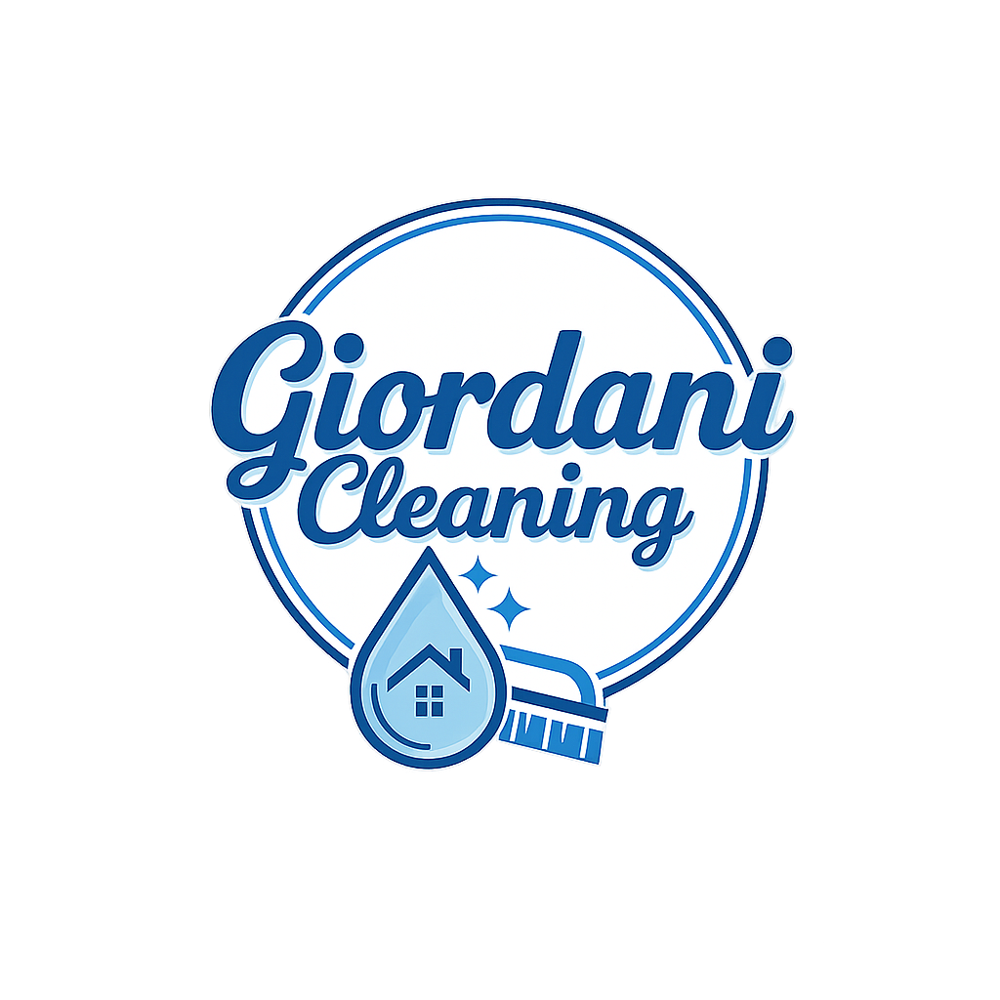
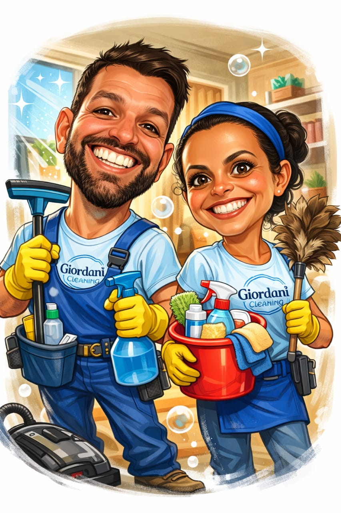
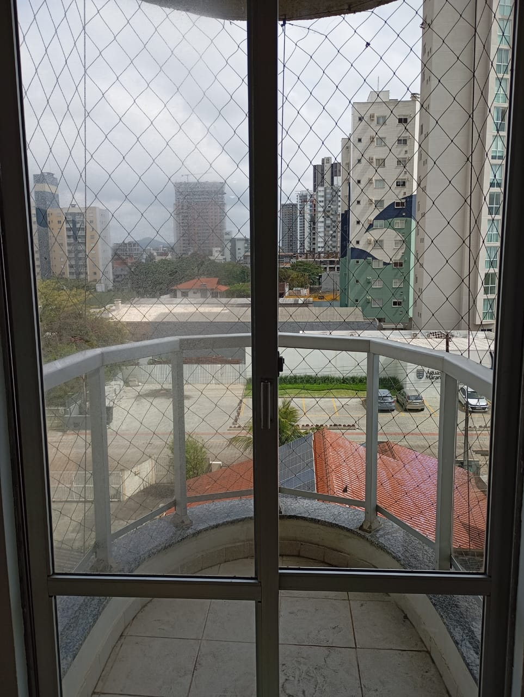
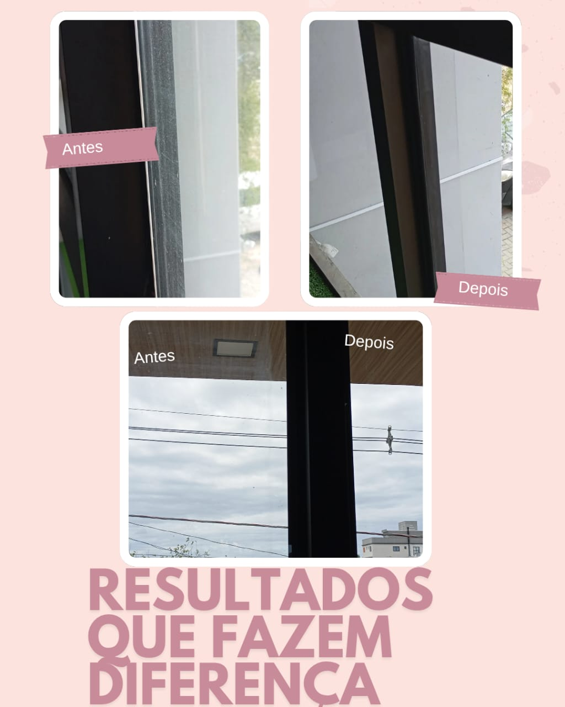
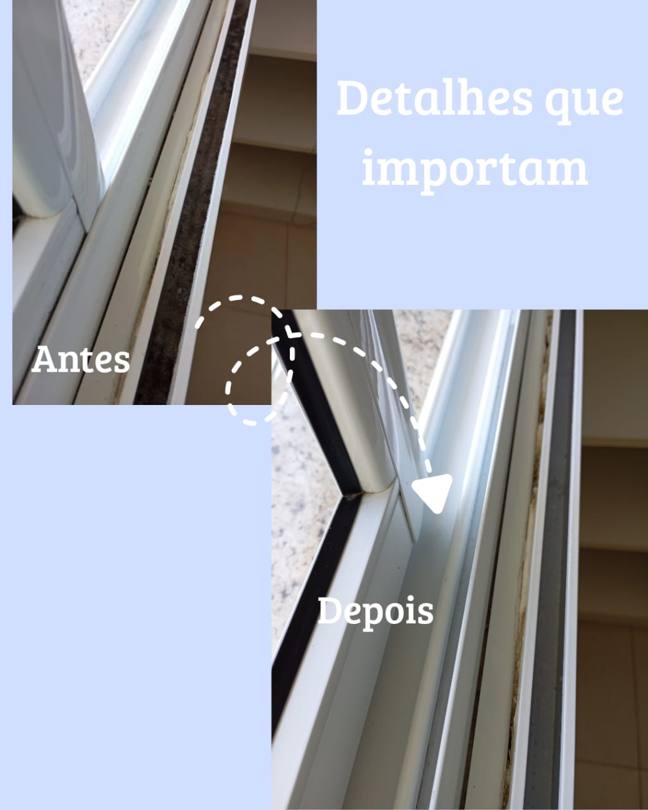
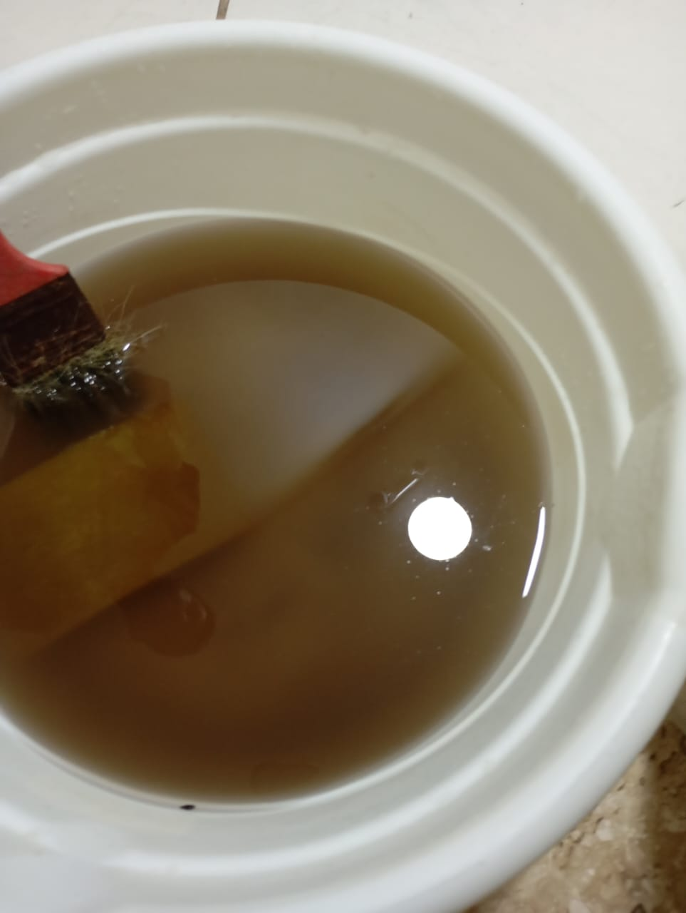
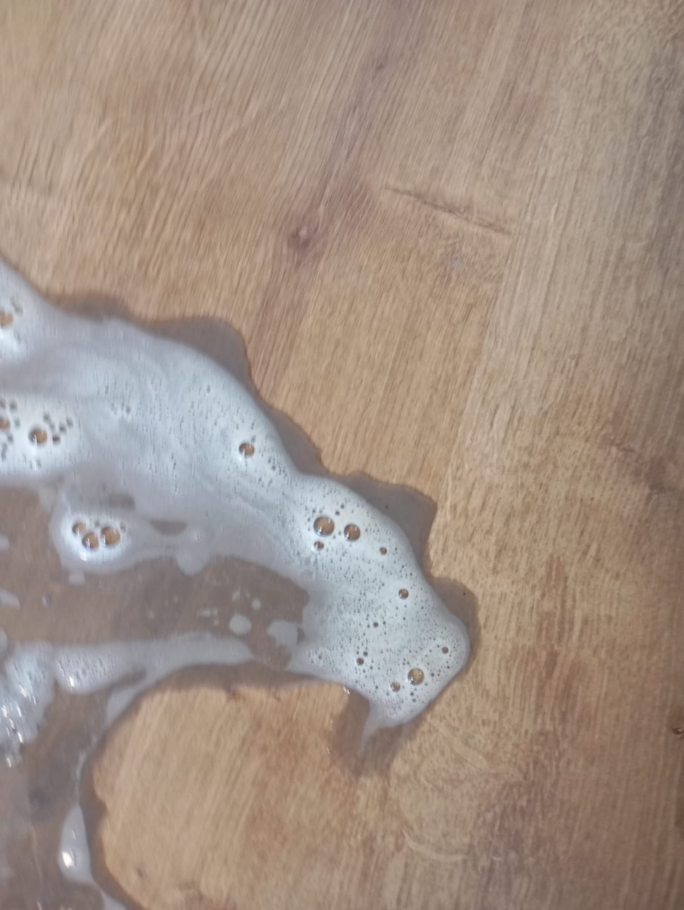
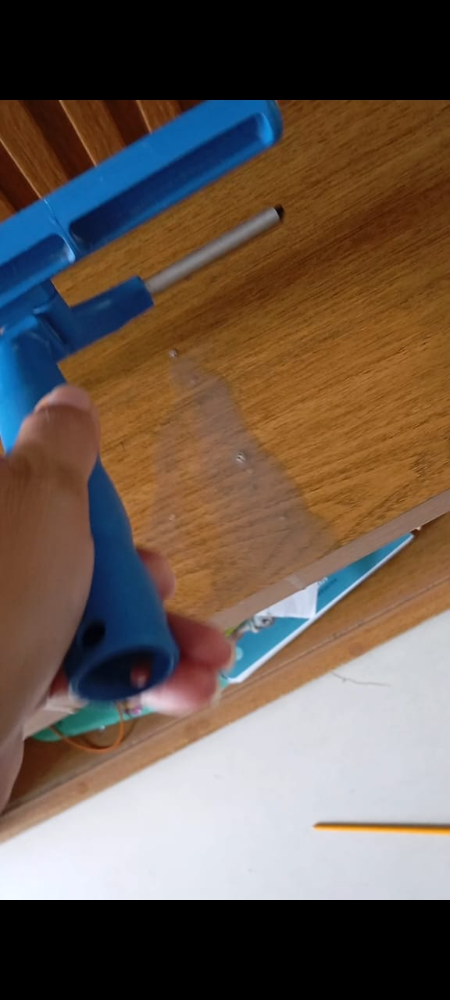
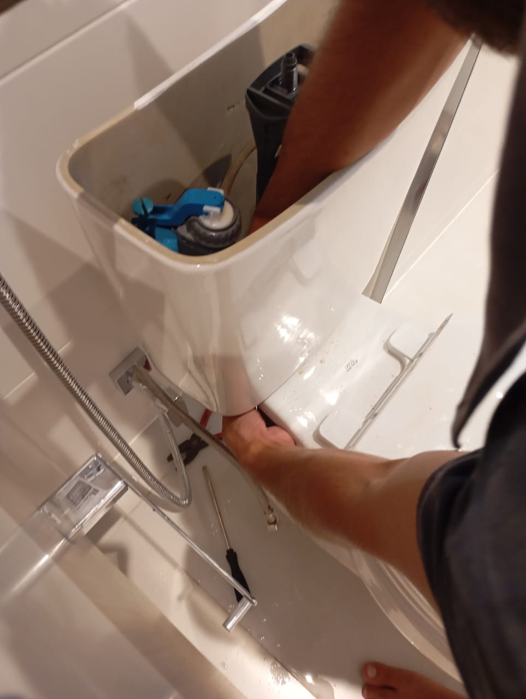
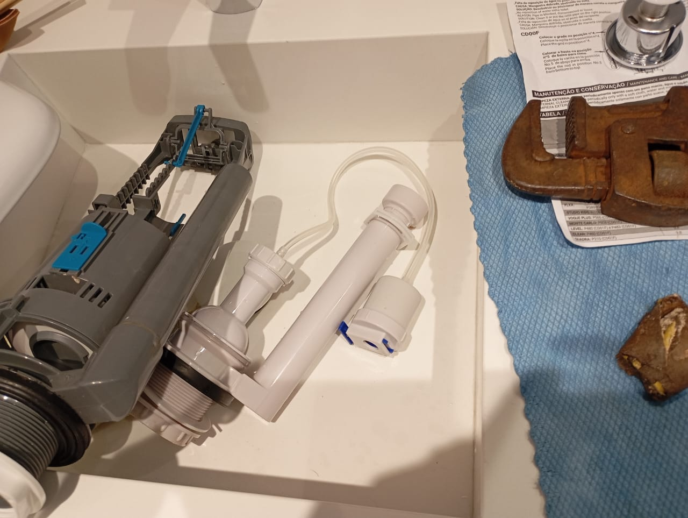

Professional Residential & Commercial Cleaning
Solicitar Orçamento no WhatsApp
Limpeza completa de casas, apartamentos e Airbnb.
Escritórios, lojas e ambientes empresariais.
Vidros residenciais e comerciais com acabamento impecável.
Lavagem cuidadosa para manter suas cortinas limpas.
Remoção de sujeiras pesadas após reformas.
Pequenos reparos e manutenções.








Somos Robson e Fernanda, um casal residente em Balneário Piçarras – SC. Trabalhamos com limpeza profissional de casas, apartamentos, imóveis de veraneio, Airbnb e empresas. Nosso compromisso é oferecer responsabilidade, capricho e confiança.